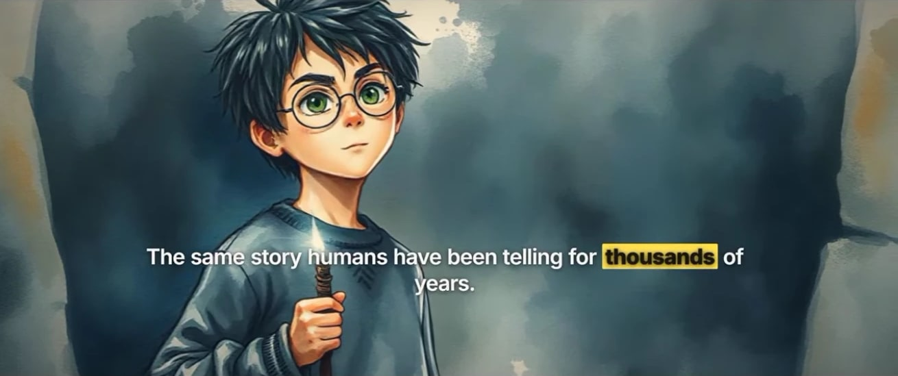

BreezeMatic
A sentence in, a finished short out. BreezeMatic turns a topic into a vertical video — written, voiced, timed to the word, painted or typeset, and mixed — on your own computer. Free and open source.

- Look
- Explainer
- Art style
- Watercolour
- Pictures
- Generated
- Voice
- Local
- Captions
- Word highlight
- Music
- Ambient
Quick start#
Clone the repository, install, check the machine, and open the app.
# clone and install git clone https://github.com/thebreezyanupam/breezematic-oss.git cd breezematic-oss pnpm install # check what this machine has pnpm cli doctor # open the app at http://localhost:4747/app pnpm cli app
- Add keys if you want them. Open Settings → Keys. Every key is optional; without any, BreezeMatic still renders, narrates with a local voice, and mixes.
- Make a video. On Create, type a topic, pick a look and a voice, and press Generate video.
- Find it. The finished MP4 lands in
out/and in the Library.
Requirements#
| Needs | Why |
|---|---|
| Node.js 22.5+ | Runs everything, including the built-in SQLite used for the local database. |
| pnpm | Installs the dependencies. |
| FFmpeg | Audio, mixing and encoding. |
| Chrome or Chromium | Remotion draws every frame in it. |
No GPU is needed. Models (the local voice, word timing, depth and pose) download on first use and are kept in the project folder.
Keys#
Each key switches one feature on. Add them in Settings → Keys — every row links to where you get it — or in .env. They are stored in .local/keys.json and take effect without a restart.
| Service | Turns on | Cost |
|---|---|---|
| Gemini | Script writing, art direction, the Gemini voices | free tier |
| Pexels | Stock video clips | free |
| Freesound | The sound-effect library | free |
| Cloudflare | Generated pictures, about 130 a day | free plan |
| fal.ai | Generated pictures and your cloned voice | paid |
| ElevenLabs | The most expressive voices | paid |
| Supabase | Optional sign-in and history synced between computers | free tier |
.env file; Import keys puts them back.Looks#
The look decides how a video is drawn. The topic, voice and timing work the same in all of them.
| Look | What it does | Cost |
|---|---|---|
| Painted | Every beat painted live in watercolour and ink while it is read, words handwritten underneath. | free |
| Explainer | Pictures with camera moves; counters, charts, maps and definitions on the facts. Has an art style. | free or paid |
| Kinetic type | Large animated words over a photograph or clip, cut to the beat. | free or paid |
| Cinematic | Snap zooms, recuts, slow motion on the line that matters, a film grade. | free |
| Stick figure | A character acts out each beat in a drawn world. | free |
| Whiteboard | Writing and drawings appear under the pen. | free or paid |
| Storybook | An illustrated panel per beat, one character throughout. | paid |
Long videos (16:9 essays and ambient readings) are under Create → Long video.
How it works#
Every video passes through the same stages, and every stage reads one file — the beat sheet — that you can open and edit.
- Script. Written from your topic, or your own text split into beats.
- Voice. Local and free, or Gemini, ElevenLabs, or your own cloned voice.
- Timing. whisper.cpp pins every word to the moment it is said.
- Plan. Cuts, emphasis and layout written to
work/<slug>/beatsheet.json. - Pictures. Openly licensed photos and clips, generated stills, or painted scenes.
- Render. Remotion draws 1080 × 1920 at 30 fps; type is measured so it never clips.
- Mix. Music ducked under the voice, sound on the cuts, mastered to −14 LUFS.
- Publish. Optional, to YouTube or a Facebook Page, with a drafted description.
The app#
| Screen | What it is for |
|---|---|
| Create | Short video (9:16) or long video (16:9): topic, look, voice and reader. |
| Library | Everything you have made, filtered by short or long form and where it was posted. |
| Presets | Saved settings — look, pictures, voice, captions, music — to reuse. Never a topic or script. |
| Voices | Record a clip to clone your own voice. |
| Performance | Views, likes and comments of what you posted, in charts. |
| Spending | What paid services cost, by week and by kind, and your limits. |
| Settings | Keys, connected channels, and delete everything. |
Your own script#
Paste a script under Create → Advanced. Make video-ready splits it into beats without changing a word.
- Trim to under a minute drops whole sentences from the middle if it runs long.
- Keep every word splits it into beats and drops nothing, however long it runs.
Script tone is switched off while your own script is pasted — it is read as written.
Command line#
Everything the app does is also a command. Run them with pnpm cli <command>.
| Command | Does |
|---|---|
app | Opens the app at localhost:4747. |
doctor | Checks Node, FFmpeg, Chrome, folders and keys. |
plan --topic "…" | Script, voice, timing and beat sheet. Add --mode painted for a look. |
render --topic "…" | Draws the picture track. |
mix --topic "…" | Sound design and mastering; writes the MP4. |
keys | Lists keys; keys set, unset, export, import. |
validate <file> | Checks a hand-edited beat sheet. |
mimic <clip> | A stick figure performs the movement in a reference clip. |
cache clear | Empties the stage cache. |
pnpm cli plan --topic "How honeybees make honey" --mode painted pnpm cli render --topic "How honeybees make honey" pnpm cli mix --topic "How honeybees make honey"
Data & privacy#
Nothing you make is uploaded unless you publish it. There is no BreezeMatic server and no account to create.
| Folder | Holds |
|---|---|
work/ | Projects: scripts, beat sheets, narration, pictures, credits. |
out/ | Finished MP4s. |
.local/ | Your keys and the local database of history and preferences. |
.cache/ | Saved stage results and channel connections. |
The app listens on localhost only and refuses requests from other websites. Settings → Delete everything removes what you choose, for good.
License#
BreezeMatic is free software under the GNU AGPL v3, with an additional permission for use with Remotion.
Fonts, icons and every dependency's licence are listed in THIRD_PARTY_NOTICES.md. Pictures, footage, music and sounds fetched for a video keep their own licences; credits are written next to each video.